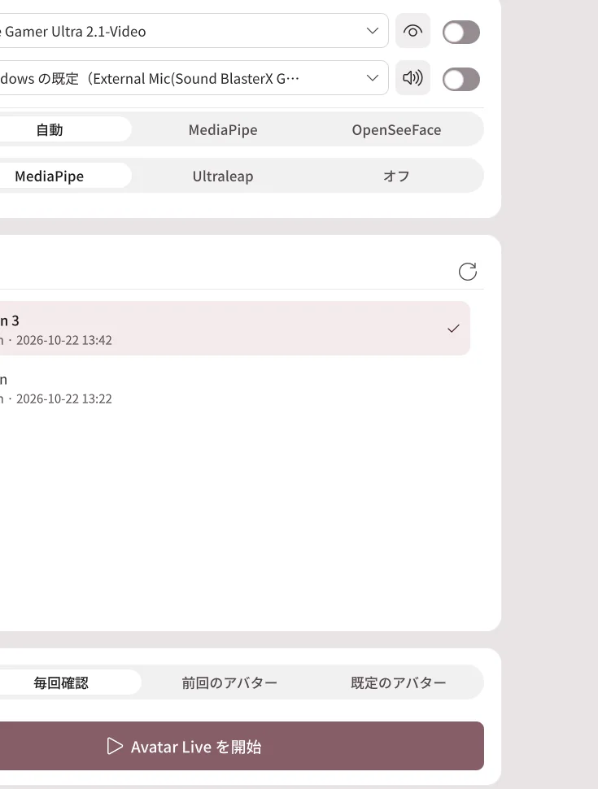

アバターライブラリ
アバターファイルを登録し、使用するキャラクターと開始シーンを選びます。
開始画面

| ボタン・項目 | 押すとどうなりますか？ |
|---|---|
| Avatarを開く | リストに「.vavatar」または「.vrm」ファイルを追加してください。また、そのファイルをウィンドウにドラッグすることもできます。 |
| 最近 | 最近使用したアバターを表示します。 |
| フォルダー | 指定したアバターフォルダーのファイルを表示します。 |
| インポートした | ライブラリからインポートしたアバターを表示します。 |
| アバターのサムネイル | 開始するキャラクターを選択します。 |
| デフォルトに指定 | デフォルトのアバターで開始する際に使用するキャラクターを設定します。 |
| プレビュー | 選択したキャラクターの姿を確認します。 |
| シーンリスト | 開始するステージの構成を選びます。 |
| Avatar Live 開始 | 選択したアバターとシーンでメイン画面を開きます。 |
開始するデバイスを選ぶ

- カメラ: 右側のスイッチをオンにすると、起動時に選択したウェブカメラを使用します。
- マイク：オンにすると、開始時に選択したマイクでリップシンクを使用します。
- 顔・手：各部位を追跡する方法を選びます。実行した後でも、デバイスで変更できます。
次回実行に使用するアバター
| 開始設定 | 次回実行時 |
|---|---|
| 毎回尋ねる | 開始画面でアバターを直接選びます。 |
| 最後のアバター | 直前に使用したアバターで開始します。 |
| 基本アバター | 基本として指定したアバターで開始します。 |
実行中に変更する
- 左上のアバター名を押します。
- リストから変更するアバターを選びます。
- 新しいファイルは「アバターファイル追加」で取り込みます。
既存のアバターを置き換える場合はこのリストを使用してください。一つのシーンにキャラクターを増やす「アバター追加」はスタジオの別機能です。
起動がうまくいかないとき
Shiftキーを押したままプログラムを実行すると、ウェブカメラとマイクを起動しないセーフ起動を使用できます。デバイスの問題を確認した後、デバイスを一つずつオンにして試してください。